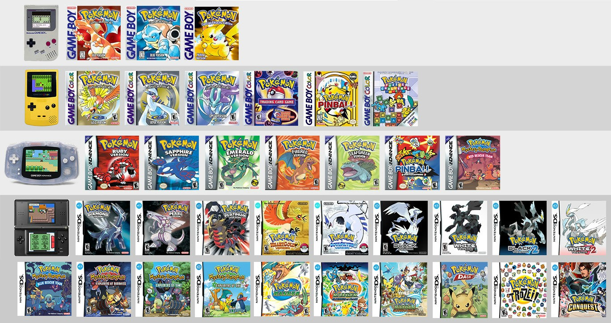

Review promosi game : Pokemon Go

Pekomon Go merupakan mobile game yang berbasis AR dan GPS dengan bertamakan menagkap pokemon yang ada disekir lingkungan dunia nyata.
Tentang Game
Pokemon Go merupakan sebuah game yang dibuat oleh niantic lab yang relis pada july 2016 mengusung sistem Augmented Reality dan GPS game ini merupakan game yang menyatukan antara dunia nyata dan buatan. para pemain dituntut untuk mengkap pokemon disekitar lingkungannya. sempat menjadi tren saat perilisannya namun tren tersebut hanya bertahan dalam satu bulan saja.
Game Pokemon
Sebelum game pokemon go realise pokemon memiliki banyak seriesnya. pertama kali muncul pada tahun 1996 dan berjalan pada game boy hingga sekarang. total ada 7 generasi game dan setiap generasi memiliki pokemonnya tersendiri.

gambar 1: Game Pokemon
gambar 2: Pokemon Emerland
gambar 2: Pokemon Go Trailer
pada trailer tersebut pihak nintendo menawarkan game yang awalnya hanya berada di "consol tangan" buatan nintendo menjadi game yang bersatu dengan lingkungan alam dunia nyata. pada trailer tersebut pihak pengembang niantic dan nitendo berhasil menggambarkan jika sebuah game dapat hidup di dunia nyata. mereka menggambarkannya dengan baik bagai mana para pemain berinteraksi dengan gamenya dan para pemainnya. dengan fitur-fitur yang sama seperti pada game pokemon sebulumnya seperti manangkap, battle dengan pemain lain, trade pokomen dengan pemain lain dan legendary event. fitur-fitur tesebut memang sudah menjadi jiwa dari game pokemon yang sudah pernah dibuat. intinya yang paling menarik dari game ini adalah interaksi antara pemain dan game dan pemain dengan pemain yang berbeda dari game sebelumnya ditambah dengan para pokemon yang menjadi objek utama dalam game ini dikarenakan banyak orang yang menenal pokemon.
namun saat pertama rilis game tersebut tidak seperti dalam triler, game hanya menyajikan fitur menangkap sedangkan fitur-fitur lain tidak ada dan ini yang membuat game hanya bertahan 1 bulan saja.